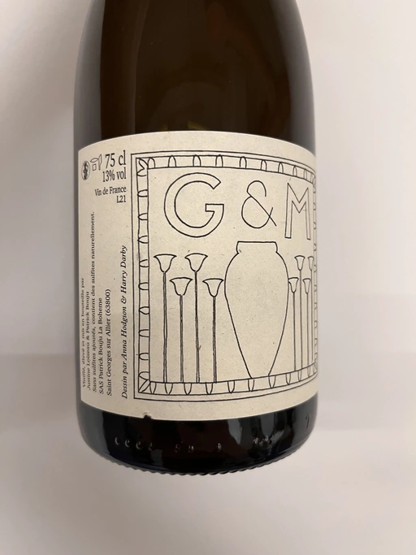
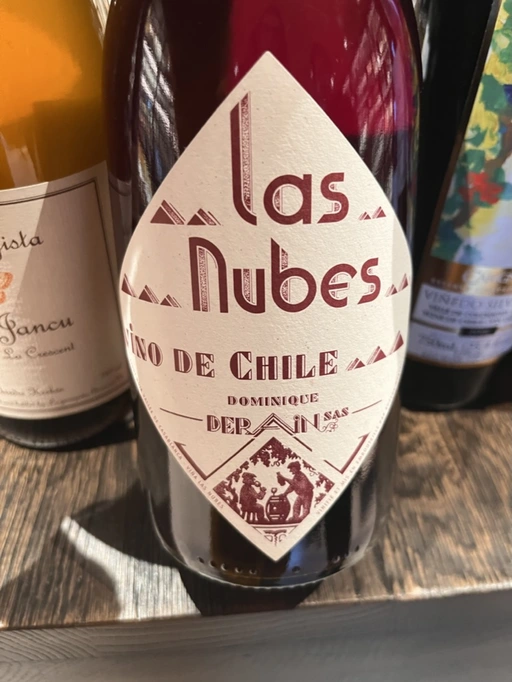
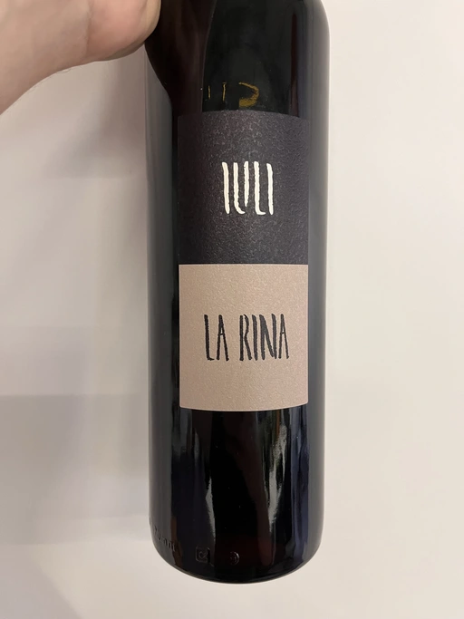
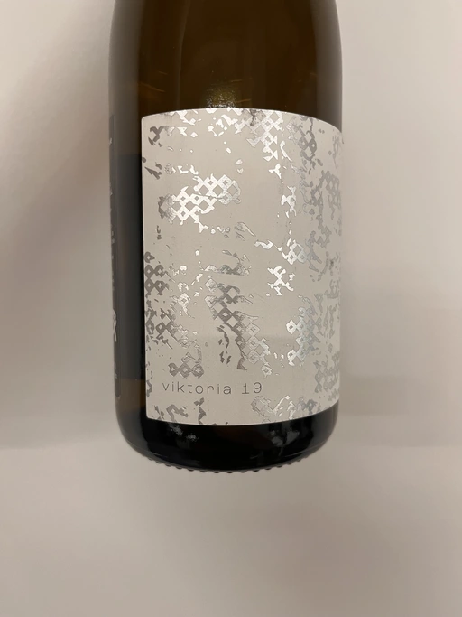
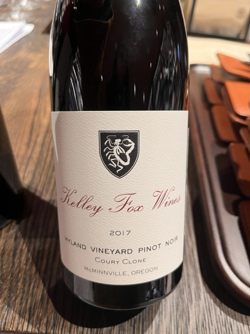
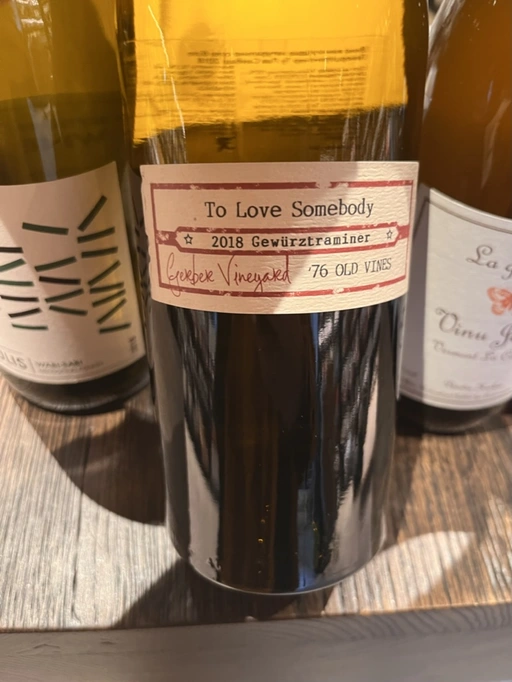

- Type
- Rose Sparkling, Brut nature
- Producer
- Patrick Bouju
- Vintage
- 2021
- Location
- France, Vin de Table
- Grapes
- Gamay, Merlot
- Alcohol
- 11
- Sugar
- NA
- Price
- 820 UAH, 930 UAH
- Cellar
- N/A
Ratings
2022-10-14 - 7.50
Great pétillant naturel. It’s a story of eternal love between raspberry and spoiled wild strawberry. And how could it evolve without some presents - bakery and red flowers? It smells fishy, believe me. Not overly complex, unpretending, yet fresh and delicious.
2022-12-05 - 7.50
Not complex, but easy-going and delicious pet-nat. Spoiled red fruits, bakery, red flowers and… that’s it.
Related

Patrick Bouju
G&M - 2021

Patrick Bouju
J - 2020

Patrick Bouju
Touski - 2019

Patrick Bouju
Sein Pour Sein - 2018

Patrick Bouju
Môl - 2019

Fratelli Alessandria
Speziale Verduno Pelaverga - 2019

Dominique Derain
Las Nubes - 2018

Iuli
La Rina - 2018

Loxarel
Clàssic Penedès Brut Nature Reserva - 2019

Krasna Hora
Viktoria - 2019

Henri Giraud
Blanc de Craie - NV

Galil Mountain
Alon - 2018

Populis
Wabi-sabi white - 2018

Kelley Fox Wines
Hyland Vineyard Pinot Noir Coury Clone - 2017

Familia Cecchin
Malbec - 2018

Ovum
To love somebody - 2018

Antoniolo
Gattinara - 2014

Villalobos
Carignan Reserve - 2016

Valli Unite
Marmote - 2017

Cascina Tavijn
Vino Bianca L.B01/2021/22 - 2021

Cascina Tavijn
Bandita - 2016

Cascina Degli Ulivi
Nibiô - 2010

La Garagista
Vinu Jancu Reserve - 2017

Andre et Mireille Tissot
La Mailloche Vin Jaune - 2012